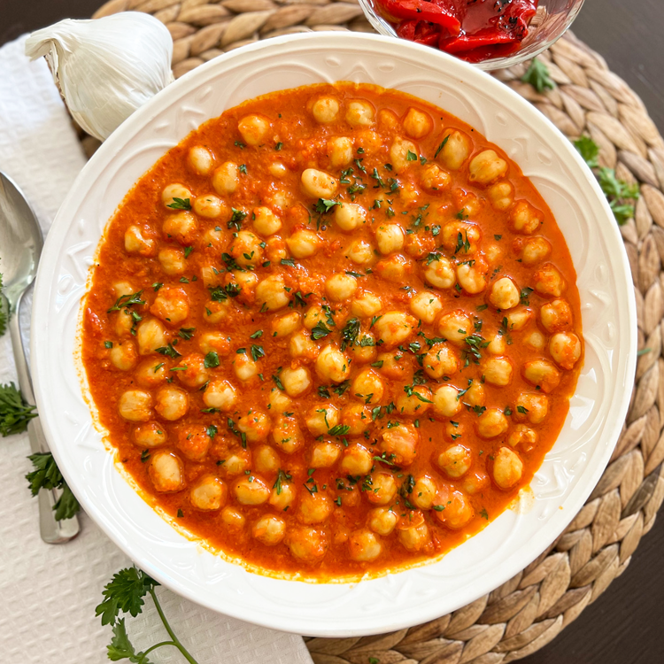

Garbanzos

Introduction
These Spanish Garbanzos a la Navarra, which is basically chickpeas with a roasted red pepper sauce,
are packed with the most incredible flavors, easy to make and done in just 30 minutes.
Serve this dish as a main course or even as a side dish
This recipe hails from the region of Navarra in the north of Spain.
Where the famous running of the bulls are held every July, during the festival of San Fermin in the historic city of Pamplona.
How to make it
Ingredients:
- 2 tbsp extra virgin olive oil (30 ml)
- 1 onion
- 1 carrot
- 4 cloves garlic
- 1 tomato
- 4 jarred roasted red bell peppers
- 1 tsp sweet smoked Spanish paprika (2.30 grams)
- 3 cups canned chickpeas (540 grams)
- 1 1/2 cups cold water (355 ml)
- handful fresh parsley
- pinch sea salt
- dash black pepper
Preparation:
- Roughly chop the onion, finely chop the carrot (peeled & washed), roughly chop the garlic and roughly chop the tomato
- Heat a large fry pan with a medium heat and add in 2 tbsp extra virgin olive oil
- After 1 minute add in the cut vegetables (except for the tomato), mix with the olive oil,
after 5 minutes and the vegetables are lightly browned, add in the chopped tomato, continue to mix,
after 3 minutes add in 4 jarred roasted red bell peppers, 1 tsp sweet smoked Spanish paprika and season with sea salt & black pepper,
mix together and turn off the heat
- Once the mixture has slightly cooled off, add into a food processor, process until well mixed, then add in 1 1/2 cups water and continue to process until you end up with a smooth texture
- Add the sauce back into the same pan, heat with a medium heat, once it comes to a light boil, add in the chickpeas (drained & rinsed),
season with sea salt & black pepper, mix together, then add a lid on the pan and lower to a low heat
- After 10 minutes remove the pan from the heat, transfer into shallow bowls and sprinkle with finely chopped fresh parsley, enjoy!